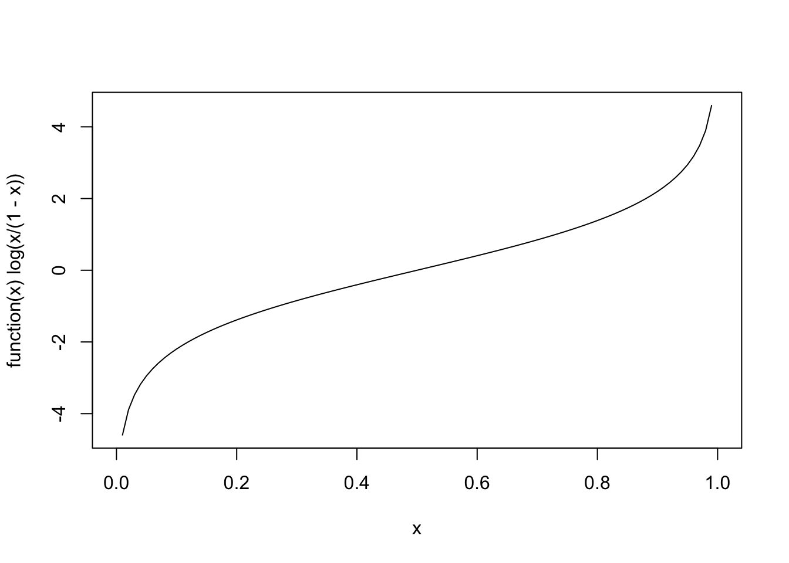
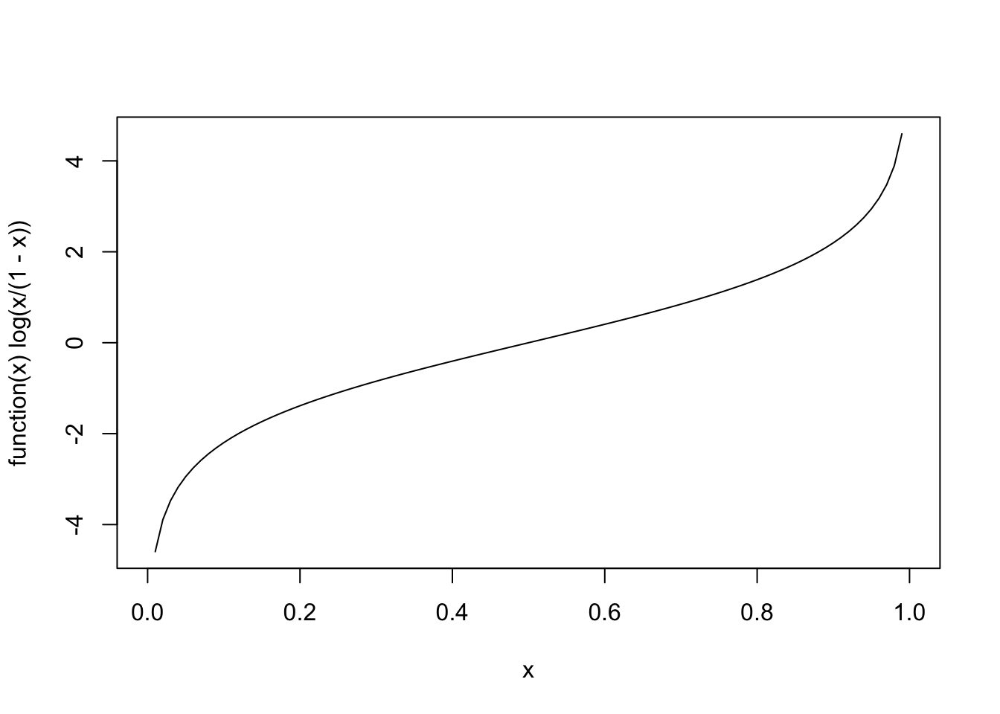

Code
# identical: plot(function(x) qlogis(x))
plot(function(x) log(x/(1-x)))
Jürgen Wilbert
June 22, 2023
If you estimate a dichotomous outcome variable \(y\) (\(y\) can take the values 0 or 1) with a standard ols (ordinary least squares) regression the distribution of \(y\) does not meet ols regression assumptions. Specifically, predicted values can be outside \(\{0, 1\}\) and are not continuous and normal distributed. A common solution for this problem is to apply a generalization of the linear regression model which is (surprise, surprise) called the generalized linear model (GLM). One aspect of the generalized linear model is that the linear combination of the predictors (linear because we assume that the added up predictors are interval scaled) are linked to the distribution of the outcome variable via a function which is called: the link function (uhhh).
It is helpful to keep in mind that for dichotomous variables, we estimate/predict the probabilities that \(y=1\). That is, the predicted values are probabilities of \([0, 1]\) (a continuous interval between 0 and 1) and not \(\{0, 1\}\) (either 0 or 1). Therefore, we are looking for a link function that turns the linear combined predictors into a probability estimation. In case of a logistic regression, we need a formula, that turns continuous values from \([-\infty, +\infty]\) to a probability (where \(0\) corresponds to a 50% probability) and vise-versa, a probability into a continuous scale with values from \([-\infty, +\infty]\). This transformation is called a logit transformation and the distribution of the transformed predicted \(y\) values is a logistic distribution. This kind of function (i.e. a function that links the distribution of linear combinations of the predictors to the distribution of the criteria in a regression) is called a link function.
The formula to turn probabilities into continuous values (here logits) is:
\[logit(y_i)=log(\frac{P(y_i=1)}{1-P(y_i=0)})=log(odds)\]
Here is the function plot for illustration with probabilities on x and logits on y:

The formula to turn continuous values (here logits) into probabilities is:
\[P(y_i=1)=\frac{exp(x)}{1 + exp(x)}\]
Here is the function plot for illustration with logits on x and probablities on y:
Logits are the logarithm of the odds of a probability \(log(Odds)\). Odds is a way to represent the probability of an event: If the odds are four against one (\(4\over1\)), than out of 5 events, 4 have one category of outcome and 1 has an opposite outcome (for example, if a horse runs five races and we expect that it will win four races and loose one, the odds are \(4\over1\)). If the odds are < 1, the probability of an event is below 50%. For example, if the odds are 0.25 = \(\frac{1}{4}\) we expect that the horse will win one out of five races.
Caution: Probabilities and odds can be confused easily but are not identical. A probability of \(1\over4\) would index that a specific outcome happens in 1 out of 4 events, whereas odds of \(1\over4\) would index that an event has the probability for two possible outcomes of 1 against 4. For this example, odds of \(1\over4\) equals a probability of \(1\over5\) equals \(0.20\).
The odds are calculated as:
\[Odds(y_i)=\frac{P(y_i=1)}{1-P(y_i=0)}\]
For example, if we have a probability of 25%, the odds are:
\[Odds=\frac{0.25}{0.75}={1\over3}\]
The formula for calculating logits is:
\[logit(y_i)=log(\frac{P(y_i=1)}{1-P(y_i=0)})=log(odds)\]
For example, if we have a 25% probability that is:
\[logit(P=0.25)=log(\frac{0.25}{0.75})=log({1\over3})=-1.098612\]
To be continued 😉